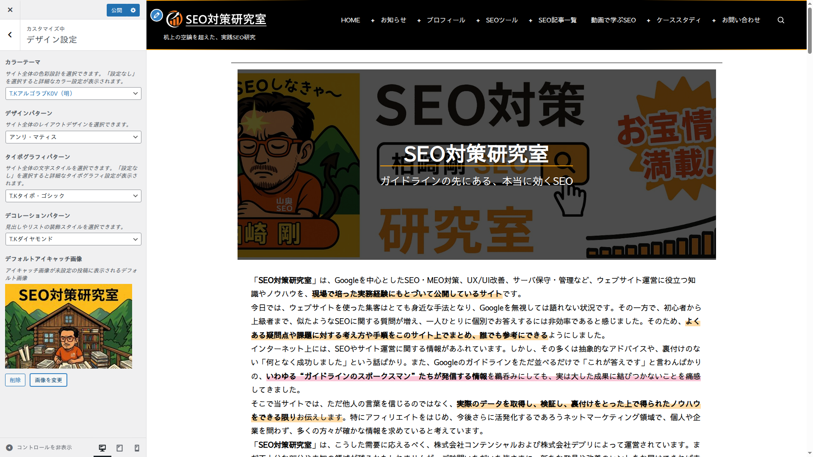
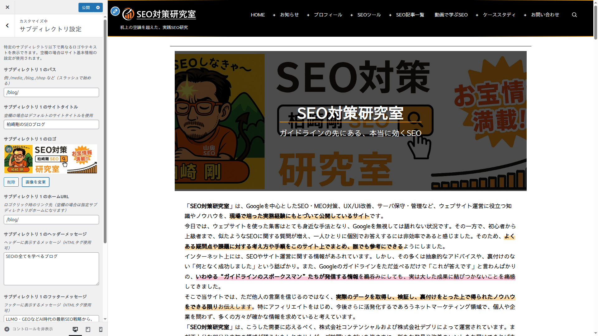
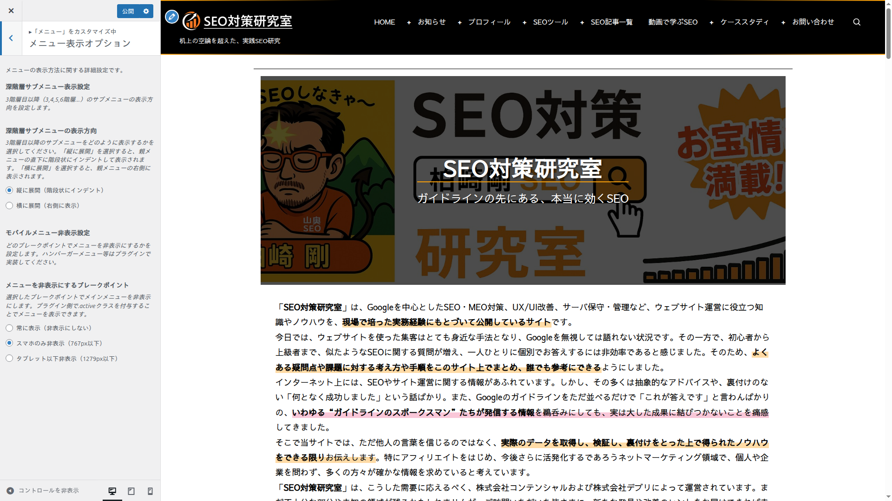
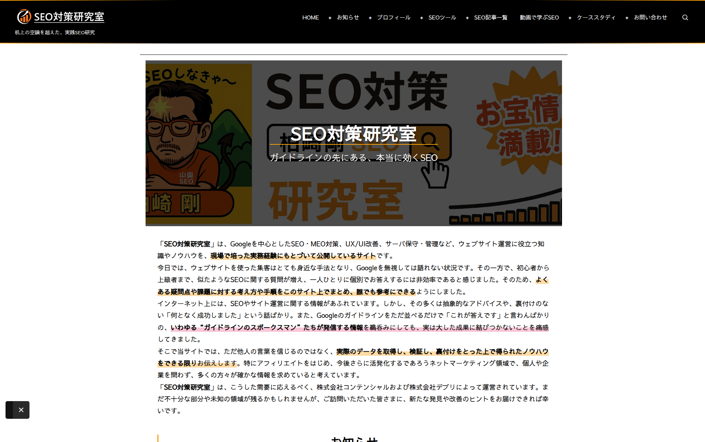

レイアウトとデザイン
サイトのレイアウト構造、カラーテーマ、デザインパターン、スティッキーUI、サブディレクトリ別ブランディングについて解説します。
サイトレイアウト
「レイアウト設定」セクションでは、フロントページのカラム数とサイドバー位置を設定します。
レイアウトの種類
| レイアウト | 説明 | 適した用途 |
|---|---|---|
| 1カラム | サイドバーなしの1カラムレイアウト。コンテンツを画面中央に集中表示します。最大幅は600〜1920px（デフォルト1200px）で調整可能。 | ブログ記事、ランディングページ |
| 2カラム | メインコンテンツ + サイドバーの標準的なレイアウト。サイドバーは左右どちらにも配置可能です。 | 企業サイト、情報サイト |
| 3カラム | メインコンテンツ + 左右サイドバーのレイアウト。情報量の多いサイト向けです。 | ポータルサイト、ニュースサイト |
| フルワイド | サイドバーなしで画面幅いっぱいに表示するレイアウトです。 | ページビルダー使用時、写真サイト |
サイドバー設定
| 設定項目 | 値 | デフォルト |
|---|---|---|
| サイドバー位置 | 左 / 右 | 右 |
| サイドバー幅 | 200〜500px（25px刻み） | 300px |
| 1カラム時の最大幅 | 600〜1920px（50px刻み） | 1200px |
投稿タイプ別レイアウト
投稿（post）、固定ページ（page）、カスタム投稿タイプ、およびカテゴリ・タグ・アーカイブ・検索結果の各ページタイプに対して個別のレイアウトを設定できます。「継承（フロントページ設定を使用）」を選択すると、フロントページのレイアウト設定が適用されます。
ブログ記事は1カラムで読みやすく、固定ページは2カラムでサイドナビ付きといった使い分けが可能です。投稿の個別ページではサイドバーのレイアウトメタボックスで記事単位での上書きもできます。
スティッキーヘッダー
「レイアウト設定」セクションで、ヘッダーのスクロール追従動作を設定します。
| 設定項目 | 説明 | デフォルト |
|---|---|---|
| スティッキーヘッダー有効 | スクロール時にヘッダーを画面上部に固定表示 | 有効 |
| 不透明度 | スクロール時のヘッダー不透明度（0〜100%、5%刻み）。値を下げると背景が透けて見えます | 80% |
| 自動非表示 | 下スクロール時にヘッダーを自動的に非表示にし、上スクロール時に再表示 | 有効 |
自動非表示が有効の場合、ページを下にスクロールするとヘッダーが画面外にスライドアウトし、上にスクロールすると再びスライドインします。コンテンツの閲覧領域を最大化しつつ、ナビゲーションへの素早いアクセスを維持できます。
スティッキーサイドバー
デスクトップ表示（画面幅1280px以上）でサイドバーをスクロール追従させることができます。
| 設定項目 | 説明 | デフォルト |
|---|---|---|
| スティッキーサイドバー有効 | サイドバーがページスクロールに追従して常に表示領域内に留まります | 有効 |
検索ウィジェットやカテゴリ一覧など、常にアクセス可能にしたいサイドバーコンテンツがある場合に有効です。2カラムまたは3カラムレイアウト選択時のみ動作します。
スクロールトップボタン
ページ下部にスクロールした際に表示される「ページ先頭に戻る」ボタンの外観を設定できます。
| 設定項目 | 値の範囲 | デフォルト |
|---|---|---|
| 表示/非表示 | 有効 / 無効 | 有効 |
| ボタンサイズ | 30〜80px（5px刻み） | 50px |
| 下端からの距離 | 10〜100px（5px刻み） | 30px |
| 水平位置 | 左 / 中央 / 右 | 右 |
カラーテーマ
「デザイン設定」セクションで、サイト全体の色彩設計を選択できます。44種類のプリセットカラーテーマが用意されています。

プリセットカラーテーマ
天体名をモチーフにした22種（各ライト/ダークの2バリエーション、計44種）のカラーテーマから選択するだけで、サイト全体の配色が一括で変更されます。各テーマは21のカラープロパティ（プライマリ、セカンダリ、アクセント、背景、テキスト、リンク、ヘッダーリンク、フッターリンク、ボーダー、ボタン、フォーム等）を含み、すべてのUI要素に統一的なカラースキームが適用されます。
独自カラーテーマ
カラーテーマで「設定なし」を選択すると、「独自カラーテーマの設定」セクションが有効になります。以下のCSS変数を個別にカスタマイズできます。
| CSS変数 | 用途 | 適用箇所 |
|---|---|---|
| --primary-color | プライマリカラー | ヘッダー背景、主要ボタン、アクティブ要素 |
| --secondary-color | セカンダリカラー | サブメニュー背景、補助的なアクセント要素 |
| --accent-color | アクセントカラー | リンクホバー、ハイライト、フォーカスリング |
| --background-color | メインコンテンツエリアの背景色 | body背景、ページ全体 |
| --background-secondary | セカンダリ背景色 | サイドバー、補助的なエリア |
| --text-primary | メインテキスト色 | 段落、リスト、テーブルセル |
| --text-secondary | セカンダリテキスト色 | 見出し、重要な文字 |
| --text-light | 薄いテキスト色 | 日付、著者名、キャプション |
| --link-color | リンク色 | テキスト内リンク（通常状態） |
| --link-hover-color | リンクホバー色 | テキスト内リンク（ホバー状態） |
| --header-link-color | ヘッダーリンク色 | ヘッダー内リンク |
| --header-link-hover-color | ヘッダーリンクホバー色 | ヘッダー内リンク（ホバー） |
| --footer-link-color | フッターリンク色 | フッター内リンク |
| --footer-link-hover-color | フッターリンクホバー色 | フッター内リンク（ホバー） |
| --border-color | ボーダー色 | 区切り線、テーブル罫線、カード枠線 |
| --button-background-color | ボタン背景色 | 送信ボタン、ページネーション |
| --button-text-color | ボタンテキスト色 | ボタン内文字 |
| --button-hover-background-color | ボタンホバー背景色 | ボタン（ホバー状態） |
| --form-background-color | フォーム背景色 | 入力フォーム背景 |
| --form-focus-color | フォームフォーカス色 | フォーカス時の枠線 |
| --search-button-color | 検索ボタン色 | 検索ボタン |
上記の21種類のCSS変数がカスタマイザーで個別に設定できます。プリセットカラーテーマのJSONファイルにも同じ21プロパティが定義されており、「ベーステーマ」を選択すると各変数の初期値がプリセットの値で自動設定されます。
デザインパターン
カラーテーマとは別に、3種類のパターンを選択してサイトの見た目をさらにカスタマイズできます。各パターンは独立して選択でき、カラーテーマと自由に組み合わせることで多様なデザインバリエーションを実現できます。
| パターン種別 | 内容 | 影響範囲 |
|---|---|---|
| デザインパターン | 角丸、シャドウ、ボーダースタイル、カードデザイン等のレイアウト装飾を一括変更 | サイト全体のカード・ボタン・パネル |
| タイポグラフィパターン | フォントファミリー、サイズ、行間（line-height）、文字間隔（letter-spacing）を一括変更 | 本文・見出し・ナビゲーション等すべてのテキスト |
| デコレーションパターン | 見出しの装飾スタイル（下線、背景色、左ボーダー、アイコン等）やリストの装飾を変更 | h2〜h6見出し、リスト要素 |
各パターンは「設定なし」を選ぶとデフォルトのスタイルが適用されます。例えば「シンプルなカラーテーマ × モダンなデザインパターン × セリフ体のタイポグラフィ × ボーダー装飾のデコレーション」のような組み合わせが可能です。
サブディレクトリ別設定
最大10個のサブディレクトリに対して、個別のロゴやデザイン設定を適用できます。1つのサイト内で複数のブランドやコンテンツカテゴリを視覚的に区別する場合に便利です。

サブディレクトリ別ロゴ・ブランディング
「サブディレクトリ別ロゴ」セクションで、各サブディレクトリ（例: /blog/、/shop/）に固有のブランディングを設定できます。各スロットには以下の項目を設定します。
- サブディレクトリパス: URL内のディレクトリ名（例:
blog） - サイトタイトル: サブディレクトリ専用のサイトタイトル（テキストロゴとして表示）
- ロゴ画像: 画像ファイルをメディアライブラリから選択
- ロゴクリック先URL: ロゴクリック時のリンク先（デフォルト: サイトホーム）
- ヘッダーメッセージ: ヘッダーに表示する短いメッセージ
- フッターメッセージ: フッターに表示する短いメッセージ
サブディレクトリ別デザイン
「サブディレクトリ別デザイン」セクションでは、各サブディレクトリに対して以下の4項目を個別に設定できます。
| 設定項目 | 内容 |
|---|---|
| カラーテーマ | 44種類のプリセットまたは「設定なし」（サイト全体の設定を継承） |
| デザインパターン | サブディレクトリ固有のデザインパターンを適用 |
| タイポグラフィパターン | サブディレクトリ固有のフォント設定を適用 |
| デコレーションパターン | サブディレクトリ固有の見出し装飾を適用 |
パス検出の仕組み
テーマは現在のURLパスを解析し、登録されたサブディレクトリパスと照合します。一致するパスが見つかった場合、そのサブディレクトリの設定が適用されます。一致しない場合はサイト全体の設定が使用されます。
例えば /blog/ はカジュアルなライトテーマ、/service/ はフォーマルなダークテーマ、/shop/ はブランドカラーのカスタムテーマといった使い分けが可能です。
ナビゲーション設定
「メニュー」セクションで、グローバルナビゲーションの動作を設定できます。

サブメニュー展開方向
| 方向 | 動作 | 適した場面 |
|---|---|---|
| 横方向（デフォルト） | 3階層目以降のサブメニューが親メニューの右側に展開 | メニュー項目が少なく画面幅に余裕がある場合 |
| 縦方向 | 3階層目以降のサブメニューが親メニューの下に展開 | メニュー項目が多い場合や画面幅が狭い場合 |
モバイルメニュー非表示ブレークポイント
デスクトップ用のナビゲーションメニューを特定の画面幅以下で非表示にする設定です。ハンバーガーメニュープラグインとの併用を想定しています。
| 設定値 | 動作 |
|---|---|
| なし（デフォルト） | デスクトップメニューを常に表示 |
| モバイル（767px） | 画面幅767px以下でデスクトップメニューを非表示 |
| タブレット（1279px） | 画面幅1279px以下でデスクトップメニューを非表示 |
検索ボタン
ヘッダーの検索ボタン（ポップアップ検索フォーム）の表示/非表示を切り替えることができます。デフォルトは表示です。
フッター設定
「レイアウト設定」セクション内で、フッターの表示内容を設定できます。
| 設定項目 | 説明 | デフォルト |
|---|---|---|
| フッターメッセージ | フッターエリアに表示するカスタムメッセージ（HTMLタグ使用可） | 空 |
| コピーライトテキスト | コピーライト表示の文言を変更 | © YEAR SITENAME. All rights reserved. |
| コピーライト表示 | コピーライト表記の表示/非表示 | 表示 |
| クレジット表示 | テーマクレジットの表示/非表示 | 表示 |
フォーム表示設定
「フォーム表示設定」セクションでは、サイト内の入力フォーム（検索フォーム、コメントフォーム、Contact Form 7等）の外観を細かく調整できます。
| 設定項目 | 値の範囲 | デフォルト |
|---|---|---|
| 垂直パディング | 0〜30px | 12px |
| 水平パディング | 0〜50px | 15px |
| フォントサイズ | 12〜24px | 16px |
| ボーダー幅 | 0〜5px | 2px |
| 下マージン | 0〜50px | 15px |
| テキストエリア最小高 | 50〜500px | 150px |
| 行間 | 1.0〜2.0 | 1.5 |
| 入力欄の最大幅 | 0〜1200px | 600px |
これらの設定は、ネイティブHTML入力要素だけでなく、Contact Form 7などのフォームプラグインの入力フィールドにも適用されます。0を指定するとブラウザのデフォルト値が使用されます。
フロントエンド表示例
